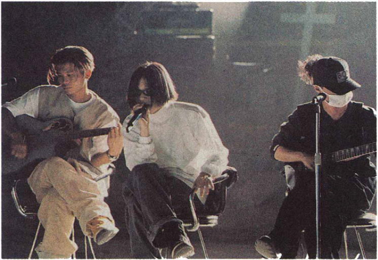

MZ세대 전에, X-세대 그들이 있었다.
멋에 살고 멋에죽는 개성파 X 세대들
X세대는 1970년에서 80년 초반에 태어나 90년대 문화를 이끈 세대이다. 당시 기성세대의 문화를 거부하고 나만의 개성과 문화를 중시하면서 '신인류'로 불리기도 했다. X세대의 ‘X’는 미지수를 뜻하는 알파벳 ‘X’에서 따온 말로, ‘도무지 알 수 없는 세대’라는 의미이다. X세대는 1990년대 당시 기성세대는 이해하기 힘든 자유분방한 문화와 행동으로 자신들을 드러냈다. 86세대와 밀레니얼 세대의 사이에 ‘낀 세대’라고 불리며 크게 주목받지 못했으나 중년의 나이가 된 지금, 뛰어난 경제력과 구매력을 갖춘 X세대는 젊은 40대, ‘영포티’로 불리며 주목받기 시작한다.
나야 나!
개성이 등장하다
"이렇게 입으면 기분이 조크든요"
90년대에는 자유분방함이 패션의 미덕이었다. 청년들은 앞 뒤가 다르거나, 양쪽이 다른 언밸런스 패션을 즐겼다. 여성들은 10cm의 통굽과 군화, 남성들도 굽이 있는 까만색 말구두(웨스턴 부츠)를 즐겨 신었다. 압구정 로데오 거리에는 샛노란 탈색에 모히칸 헤어, 피어싱, 패션 문신들이 넘쳐났다. 유명한 ‘압구정 날라리’의 탄생이다.
X세대들은 ‘이렇게 입어야 한다’는 전형적인 패션을 거부한다. 기분에 따라, 자신이 좋아하는 스타일대로 옷을 입었다. 물론 당시 어른들은 파격적인 청년들의 모습에 혀를 차기도 했다. 한 지상파 뉴스에서는 청소년들의 복장에 대해 ‘어른들 입장에서 보면 전혀 마음에 들지 않는 게 요즘 청소년들 옷차림’이라고 보도하기도 했다.
물론 그 걱정 어린 시선에 X세대는 다음과 같이 화답한다. “어쩌라구요, 전 남의 시선보다 저를 표현하는게 더 중요해요.” X세대를 겨냥한 청바지 브랜드 리바이스의 광고에선 이런 멘트까지 나온다.
거리 위
우리의 젊음
Generation-X #1
삐삐
"10102486"
한국에서는 ‘삐삐’로 불렸지만, 삐삐의 원래 이름은 ‘무선호출기’다. 이름만 보면 상대방을 호출할 수 있는 기계 같지만 무선 호출기는 사실 최대 20자 정도의 숫자메시지를 수신하는 기계였다. 전화기기를 이용해 상대방 삐삐에 자신의 전화번호와 숫자 메시지를 전송하면 수신을 받은 이는 공중전화로 가서 수신 받은 전화번호로 연락하는 방식이다.
X세대는 이 기계를 충실하게 사용했다. 숫자문자로 보낼 수밖에 없다는 한계를 극복하기 위해선 17171771(돌리면 I LUV U 로 보인다), 1126611(중간에 줄을 그으면 사랑해로 보인다) 8282(빨리빨리) 등의 삐삐 약어를 만드는 창의력을 발휘했다.
Generation-X #2
PC통신
삐삐처럼 PC통신도 개인과 개인의 연결을 가능하게 했다. PC통신은 전화망을 통해 접속했던 통신 서비스다. 국내에는 대표적으로 KTH가 운영했던 하이텔, 나우콤이 운영했던 나우누리 등이 있었다. 사용자들은 PC통신용 단말기나 컴퓨터를 통해 본인이 가입한 업체의 서비스만 이용할 수 있었다. 따라서 하이텔에 가입하면 하이텔만, 천리안에 가입하면 천리안만 이용할 수 있었다.
PC통신이 제공했던 서비스는 지금의 포털보다는 다양한 종류의 자료실, 게시판과 채팅방을 모아둔 것에 가까웠다. 이곳에서 음악, 게임, 오락, 애니메이션, SF등의 동호회가 만들어지기도 했다.